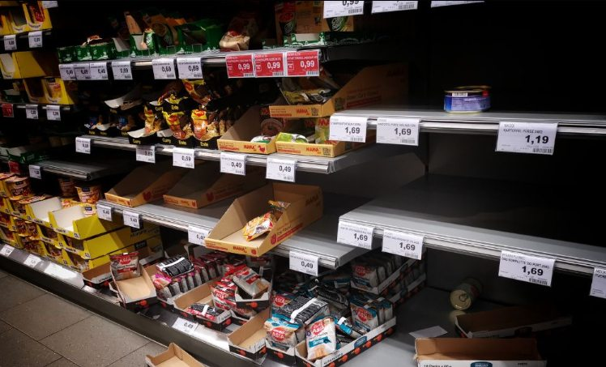
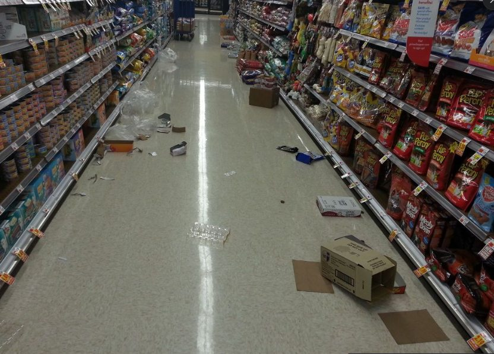
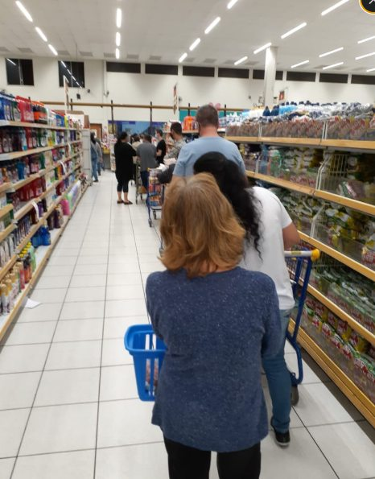
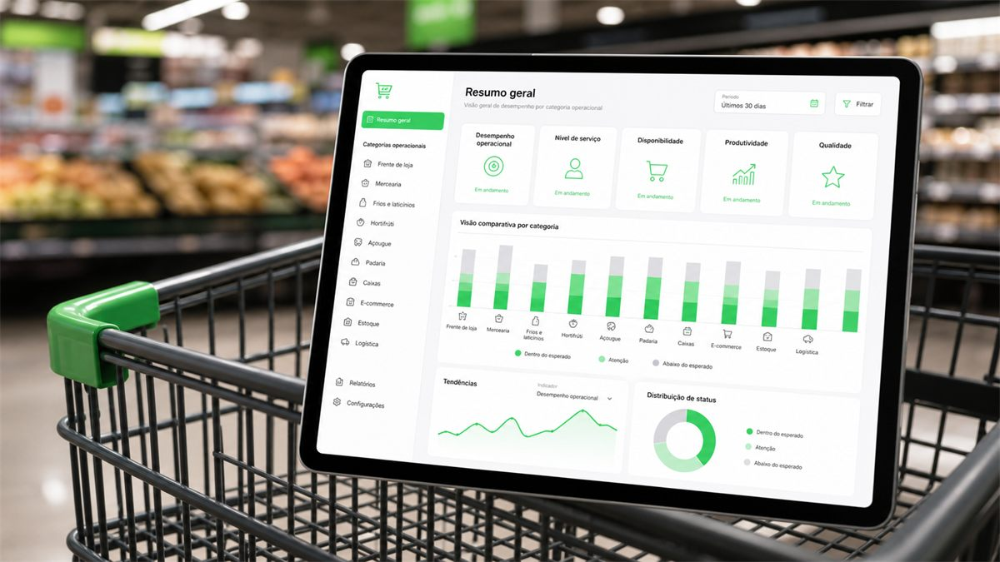

NPS e pesquisa
A percepção de quem compra: o que gerou atrito, o que fez voltar e o que fez desistir.
Cliente oculto para supermercados com IA
Cliente oculto recorrente para revelar fila, ruptura percebida, preço ausente, validade, limpeza e atendimento antes que o cliente escolha o concorrente.
A inteligência artificial lê os dados das visitas, do NPS e do checklist, aponta a prioridade de cada loja e entrega o insight no seu WhatsApp.

Por que Observe Mais
A maioria das empresas de cliente oculto entrega a visita. A Observe Mais junta a visita ao NPS do cliente e ao checklist da liderança — e é no cruzamento das três que aparece o que a loja realmente precisa corrigir.
A percepção de quem compra: o que gerou atrito, o que fez voltar e o que fez desistir.
O padrão que o gerente reporta como executado, item a item, loja a loja, turno a turno.
A execução observada em loja, com roteiro, critério e evidência — sem aviso e sem interferência.
É aqui que está o dinheiro:
Quando o checklist diz 100% conforme, o auditor registra ruptura na gôndola e o cliente responde nota 6, a divergência não é um erro de medição. É exatamente o ponto onde a loja está perdendo venda sem saber.
Com uma fonte só, essa divergência é invisível. É por isso que as três precisam estar na mesma leitura.
As três fontes convergem em uma leitura comparável entre lojas, setores e ciclos — em vez de três documentos que ninguém cruza.
A inteligência artificial processa os itens checados, encontra reincidência e devolve a prioridade do ciclo no WhatsApp da liderança.
Não vendemos ganho garantido. Medimos a loja, mostramos a evidência e só então discutimos o que dá para corrigir e em que ordem.
Cada ciclo compara com o anterior: o que foi corrigido, o que voltou a falhar e o que virou padrão sustentado na operação.
Preço, ruptura percebida e exposição
O que faz o cliente abandonar o item ou trocar de mercadoFila, espera e fechamento da experiência
O último contato antes da decisão de voltar ou não voltarAbordagem, limpeza, validade e padrão
Falhas críticas acompanhadas até virarem rotina de melhoria
Perda silenciosa no supermercado
O dono enxerga venda, equipe e abastecimento. Mas a experiência real acontece nos detalhes: um produto sem preço, uma ruptura percebida, uma fila que parece interminável ou um atendimento frio no pior horário.
A Observe Mais transforma esses sinais em evidências de loja para priorizar correções antes que a perda apareça como queda de recorrência, avaliação negativa ou venda que não voltou.
Agendar diagnóstico do supermercado
Três visões operacionais
A Observe Mais cruza execução observada, percepção do cliente e leitura da liderança para mostrar onde o supermercado precisa agir primeiro.
As 3 visões que constroem o Score
328visitas no ciclo
1.810avaliações
1.140itens checados
Repare no que a leitura integrada revela: o auditor viu 88,9% de conformidade e a liderança reportou 92,4% — mas o cliente devolveu NPS 35,3. A loja está executando o processo e ainda assim perdendo o cliente. Nenhuma das três visões, sozinha, mostraria isso.
Roteiro de visita observa entrada, corredores, perecíveis, preços, validade, limpeza, atendimento e checkout com critérios objetivos.
Ver relatório por setor →A avaliação mostra onde a compra fica difícil: espera, desorientação, produto não encontrado, atendimento frio ou insegurança na escolha.
Ver relatório por setor →O gestor compara o que a equipe acredita estar entregando com o que foi visto na loja, definindo responsáveis e prazos de ajuste.
Ver relatório por setor →Checkout, corredores, perecíveis, limpeza e atendimento.
O que a operação planejou versus o que o cliente viveu.
Leitura comparável para agir onde há mais risco.
Responsável, prazo e nova medição para evoluir o padrão.
Dashboard setorial
O relatório organiza as evidências por fila, preço, ruptura percebida, validade, limpeza, exposição e atendimento. Assim, a liderança compara lojas, identifica reincidência e decide o que corrigir primeiro.
A composição ao lado reproduz a estrutura real do relatório com lojas anonimizadas e números de exemplo. Indicadores, setores e frequência são definidos na proposta comercial.
Agendar diagnóstico do supermercadoPrioridade do ciclo: perecíveis na Loja D reincidiu por 3 visitas seguidas. Resumo enviado ao WhatsApp da liderança.
A Observe Mais acompanha operações reais para identificar falhas de execução, melhorar rotinas e transformar observações de loja em plano de ação.


“Encontramos falhas de execução que não apareciam nos indicadores internos.”
A Observe Mais estrutura cada visita com roteiro aprovado, critérios de avaliação e foco na experiência real do supermercado.
O relatório organiza evidências por setor, gravidade e prioridade. Depois, a devolutiva ajuda a liderança a decidir responsáveis, prazos e nova medição.
O objetivo não é fiscalizar por fiscalizar. É enxergar a loja como o cliente enxerga e transformar achados em melhoria operacional.
Diagnóstico antes do ROI
Use um cenário ilustrativo para estimar quanto pequenos atritos de loja podem representar na recorrência do supermercado.

O valor depende da quantidade de lojas, frequência de visitas, setores avaliados e profundidade do relatório. A conversa inicial define o escopo antes da proposta comercial.
Depois do alinhamento de objetivo, roteiro e unidades, a operação pode iniciar conforme a disponibilidade validada na proposta.
A visita é feita por avaliadores orientados por roteiro, com critérios definidos para observar a experiência real da loja sem interferir na rotina.
As evidências são organizadas por loja, setor, gravidade e prioridade para orientar reuniões de correção com a liderança.
A avaliação pode considerar checkout, corredores, hortifruti, perecíveis, exposição, preços, limpeza, validade, atendimento e outros pontos definidos no briefing.
O diagnóstico deve priorizar evidências operacionais e dados necessários para a melhoria, evitando exposição indevida de pessoas e informações sensíveis.
A IA faz a leitura do volume de dados coletados em visita, NPS e checklist, encontra reincidência e divergência entre lojas e turnos, e transforma isso em insights priorizados entregues no WhatsApp do gestor. A avaliação em loja continua sendo feita por avaliadores humanos.
Porque a Observe Mais não entrega só a visita. Ela reúne na mesma leitura o que o cliente diz no NPS, o que a liderança reporta no checklist e o que o avaliador observou na loja. As três visões formam um Score comparável, e a IA aponta onde elas divergem.
Agende um diagnóstico de cliente oculto para supermercado e transforme fila, ruptura, preço, validade, limpeza e atendimento em prioridades claras de ação.
Agendar diagnóstico do supermercado Indicado para supermercados independentes, redes regionais e operações com múltiplas lojas.